Pattern Tutorial Part 1 (Introduction to EGF patterns)
Summary
Generating content such as source code can save you time in your projects and can reduce the
amount of tedious redundant programming. Generating can be powerful, but the program that writes the code
can quickly become very complex and hard to understand.
One way to reduce complexity and increase readability is to use the Eclipse Generation Framework (EGF).
EGF project contains two very powerful tools for generating outputs: The factory component (FC) task factory
and the pattern. With the pattern you can use an enhanced template-based approach (current implementation uses JET)
that makes it easy to express the output you want to generate.
In this tutorial you will learn how to :
- create patterns
- produce an executable form of the patterns
- execute patterns
- use pattern parameters
- use pattern inheritance
Contributed by Guillaume Brocard, Thales EPM, guillaume.brocard at thalesgroup dot com, February 28, 2008.
Modified for EGF contribution, January 29, 2009.
Requirements
Before creating our first pattern, you will need the EGF Engine plug-ins version 1.0.0.
If you haven't installed it yet, you can get a fully package version here.
Install it before continuing with this tutorial.
You must also be familiar with the handling of factory components.
If not, make sure you understand the Factory Component Tutorial Part 1.
Finally, it is required that you have read and understood the pattern concepts.
HelloWorld pattern
Let's start with the famous example of displaying the message "Hello, world".
So as to create our first example, the following steps are required :
- Create a new Factory Component (FC) project.
- Add the new FC a pattern library.
- Create a new pattern under this library.
- Feed the pattern with the Hello World implementation.
- Produce the pattern.
- Tell the FC factory to execute our pattern, and what to do with the result.
- Finally, launch a new workbench and execute it.
From the workbench menu, select File > New > Factory Component Project to bring up the New Factory Component Project wizard.
- Give it the pattern.tests name and click Next
- It does need neither to get an activator, nor to contribute to the UI (unselect those options), click Finish
- When the MANIFEST.MF editor displays, click the Activate this plug-in when one of its classes is loaded option, then save and close it
The Factory Component Explorer displays the newly created FC as shown in the image below.
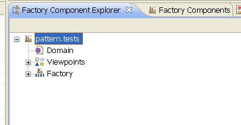
Deploy the Viewpoints node and select the Pattern Viewpoint one.
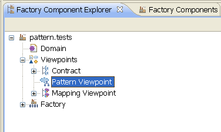
- Right click New > Pattern Library
- Give it the HelloWorldLibrary name and click Finish
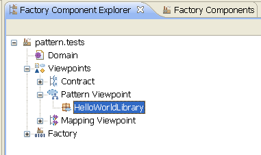
A library is a container for libraries and/or patterns.
The Pattern Viewpoint can only contain libraries.
Now that we have an element that can contain a pattern, let us create it.
- Right click the HelloWorldLibrary New > Pattern
- Give the pattern the HelloWorld name and click Finish
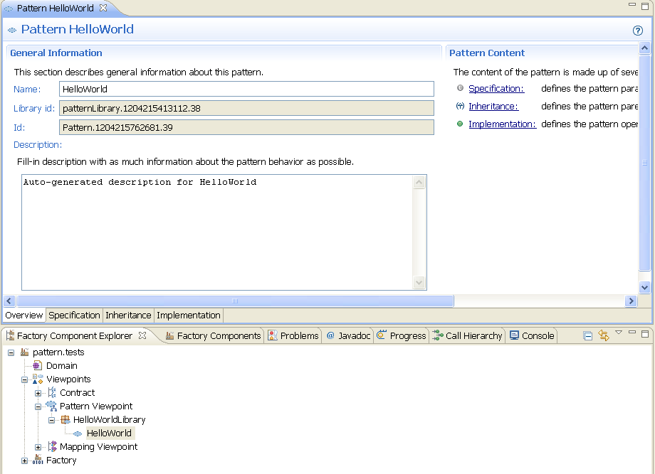
The new pattern is displayed as a node of HelloWorldLibrary and its editor opens automatically.
This is the only place where we can change the properties of the pattern.
For now, we'll focus on the Overview and Implementation pages.
The Overview page is allowing the user to change both the name and the description of the pattern.
-
The Name field is giving the pattern a logical name.
 It does not have to be unique, although this is the name presented in every user display.
So this is a good idea to have a full name [Parent Libraries names]+[Pattern name] exclusive enough to identify it.
It does not have to be unique, although this is the name presented in every user display.
So this is a good idea to have a full name [Parent Libraries names]+[Pattern name] exclusive enough to identify it.
-
The Description field is purely an informative one.
This is the only opportunity we've got to explain the purpose of the pattern.
It is highly recommanded to explain the parameters of this pattern, its hierarchy and the goal of its implementation.
Switch to the implementation page of HelloWorld editor.
This page is made of two main sections.
-
The Pattern internal methods defines the templates that we want to write, as new pattern methods.
This is convenient when it will come to override those methods, or to choose to use them or not.
-
The Generate method is the main public method of the pattern.
This is the one that is called by the framework when the pattern is being applied, either by another FC or as a
pattern call from another pattern.
Select the internal method generateHeader. A new section is spawn in the right part of the page.
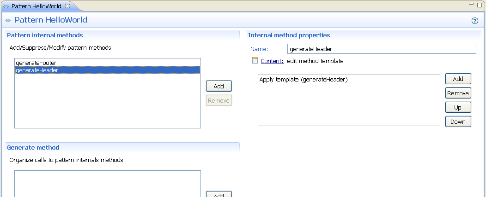
Click the Content link of the Internal method properties section of generateHeader.
A new JET editor opens.
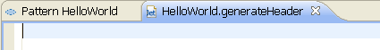
The generateHeader method is an important one.
Add it the following code :
<%@ jet package="pattern.tests" class="HelloWorldGenerator" %>
By doing so, we're telling JET compiler to compile our future template in a Java class form, called HelloWorldGenerator
and located in package pattern.tests
All JET pattern must implement the generateHeader method.
So as to ease the user experience, a default header is generated by the framework at first generation time, if none is provided.
The generated content would very look like the one we have just entered.
Now close the generateHeader editor.
Back to the HelloWorld editor, click the Add button of the Pattern internal methods section.
A new internal method newMethod0 is created. Select it and rename it displayMessage (to do so, change
the Name value in the Internal method properties section).
Click the Content link to edit its content.
Add it the following piece of code :
Hello world !
Make sure you're adding the extra new line at the end of the message (the one at the end of the first line is eaten at
compilation time). Close the displayMessage editor.
We are almost done with our first pattern.
There remains one important step. That is tell our pattern what to do with its methods.
This is handled by the Generate method section.
-
Click the Add button of this section.
The following wizard is displaying :
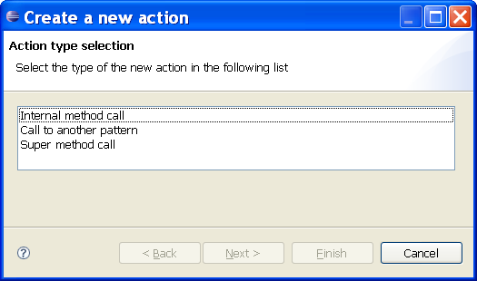
-
Select the Internal method call action, and click Next >
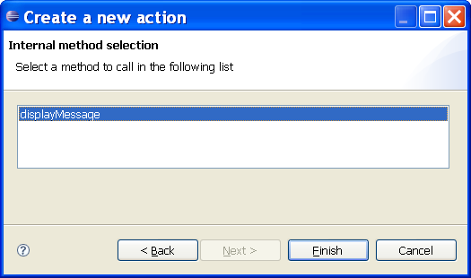
- Select displayMessage, and click Finish
You did not get the opportunity to select generateHeader or generateFooter methods.
There are handled automatically by the pattern framework, whether the pattern is an independent one or not.
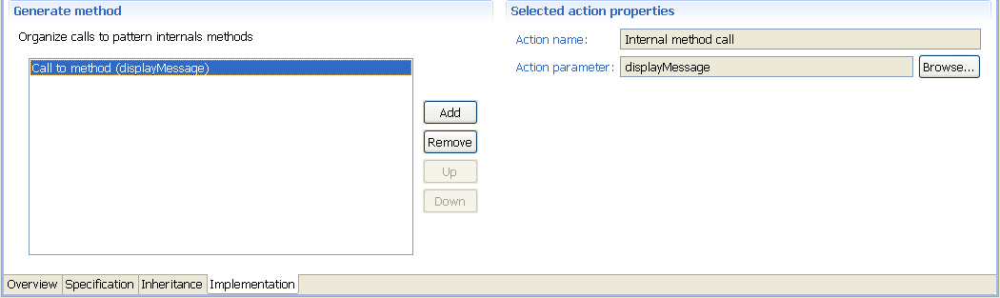
A new section has appeared (Selected action properties), this time to display the properties of the new call inserted in the generate method
of our pattern.
Save the pattern editor.
So far, we have been editing the pattern model through a dedicated editor.
The pattern can not be executed in this form directly. Indeed JET is expecting just one template file as something to
eat. So there is a production phase for every pattern we want to use.
This production will create a lot of stuff in the plug-in structure hosting the FC.
Do not add those files to the configuration management yet (if you are asked to).
Now to the production.
There are two ways for producing a pattern.
By default, it is automatically produced at save time.
Save the pattern editor (Ctrl + S or File > Save).
Note that the list of internal methods is now sorted by name.
If this option has been disabled (Main menu Pattern > Produce automatically unchecked), then :
- Select HelloWorld pattern in the FC explorer
- Right click, Produce
A new progress monitor is invoked (bottom-right part of the workbench) so as to provide you with progress.
The Package Explorer content is being refreshed during the process.
You should end with new content in the generated source folder of your FC project.
We are expecting to find our HelloWorldGenerator class as specified by the generateHeader method of our pattern.
This class should compile ok.
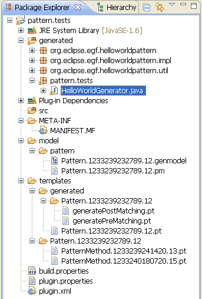
 You can open this class to figure out the content of the generated generator.
You can open this class to figure out the content of the generated generator.
Nevertheless, you must keep in mind that this class is overwritten by the production phase each time it is invoked.
Make sure you're not modifying it directly. Use the pattern editor instead.
It is time to execute our pattern. The following steps are required :
- Create a factory component invocation referencing Pattern Runner
- Create a reporter
- Fill the context of the invocation
First step, the factory component invocation
- Create a factory component invocation pointing to Pattern Runner
- Do not fill its context yet
FC pattern.tests should look like the following one :
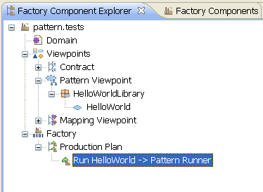
Second step, the reporter
The contract of Pattern Runner is asking for a reporter.
This is an important element of the execution of a pattern. The goal of the pattern is to generate an output. In our case
a textual output. Then raises the question of what to do with this output. This is the job of the reporter.
A reporter is a class that implements the IPatternExecutionReporter interface. In fact, this is a call-back
that is triggered the result of a pattern execution, and its sub-parts that are likely to generate independent content.
This is the place where you decide what to do with the output content.
For now, we'll be using the default implementation PatternExecutionRepoter that sends the output to EGF loggers.
Third and last step, filling the context
Fill the context of the Pattern Runner invocation with the following values:
- Set execution reporter to PatternExecutionReporter as seen earlier
- Select HelloWorld pattern as the pattern element to run (contract element patternOrLibraryFullId)
- Do not give any value to model path, as this is not required here
The FC is now ready for action.
Create a new launch configuration of the Eclipse SDK application enabling all your workspace plug-ins and the deployed ones.
In the newly launched workbench, go to EGF perspective, and to the Factory Components view.
Execute pattern.tests factory. The result (in launching console) should look like the following one :
2008-03-03 15:03:38,717 INFO [Worker-5] - PatternExecutionReporter.patternExecutionFinished(..) _ Start of patternLibrary.1204215413112.38/Pattern.1204215762681.39
Hello world !
End of patternLibrary.1204215413112.38/Pattern.1204215762681.39
You can close this workbench now.
The pattern specification part
We've been displaying a message with pattern, and that's a good start since the template-based approach is producing text.
Maybe a bit of model handling would be interesting too (EGF is supporting the model-driven paradigm).
Well you're supposed not to have skipped the previous parts of this tutorial.
What's more, HelloWorld pattern will likely be changed, so a little backup at this point might sound interesting.
Even better, you could be repeating in 5-10 minutes the previous steps, so as to make sure you did acquire the required
dexterity with patterns (that will provide you with a copy of your HelloWorld pattern).
In this part, we'll be feeding our HelloWorld pattern with models.
This is achieved through the Specification page of the pattern editor.
So open HelloWorld editor (if needed) and go to Specification page.
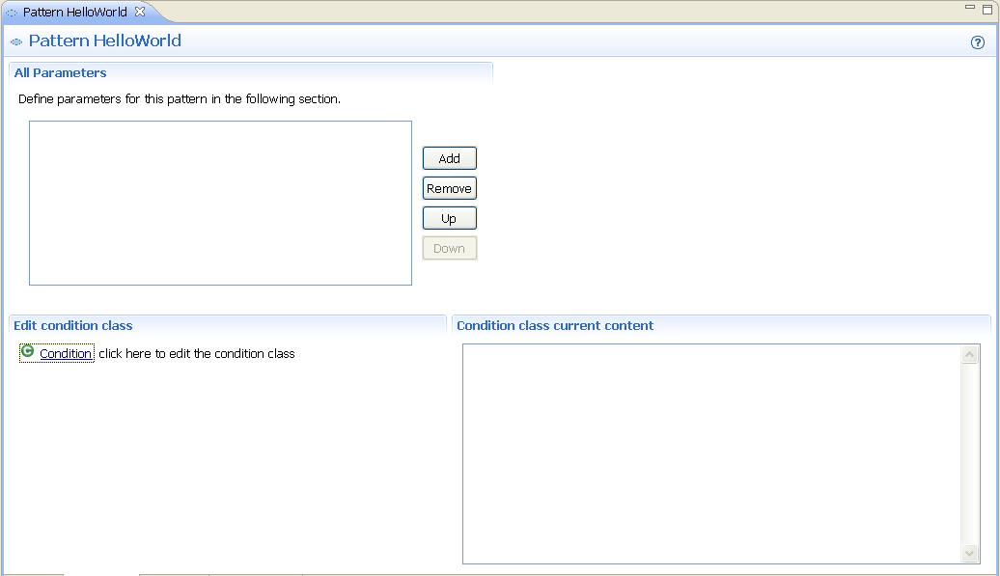
A word about pattern parameters
Adding a new parameter is telling the pattern that we would like it, at execution time, to execute its behavior for
every possible value of this parameter, considering the provided model.
Let's precise this assertion with several new ones :
- A parameter is defined at the meta-model level
- It is taken into account when the pattern is running, at the model level
- A matching value is an element of the given model (at runtime) that is a sub-type of the defined parameter
- For each matching value, the pattern applies a condition, and executes its Generate method (if the condition is fulfilled)
Adding a new parameter
This is a concept best experienced, so we'll add HelloWorld a pattern, and see what happens.
-
Click the Add button of the All Parameters section.
A new parameter is created with a generic name (newParameter0 if you have not fooled with parameters yet).
-
Select it in the list viewer.
A new section appears with its properties.
-
Change its name to anEclassifier.
The name is changing on the left list viewer too.
-
Click the Browse button of its Type field.

Select EClassifier in this new window.
By default, the Type selection tree is displaying ECore meta-model.
Click Finish.
The type name has changed in the left list viewer too.
-
Now save the editor.
Note that the bottom right section is now displaying a content.
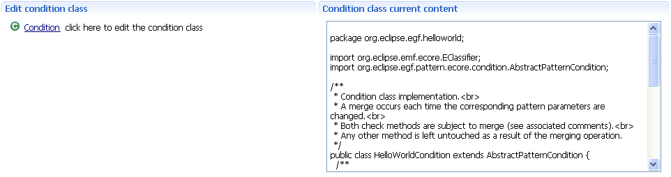
This new content is a default generated content for the condition class.
This widget helps you see the content of an already deployed pattern condition.
For pattern being developed, the best thing to do is to click the Condition link in the Edit condition class section.
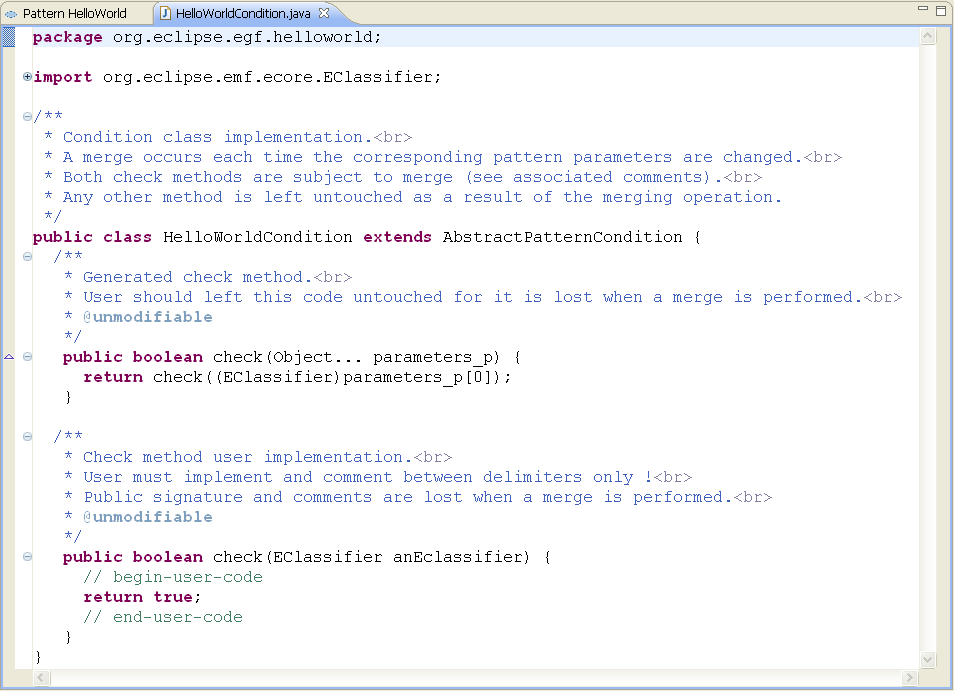
The condition class helps to choose if a value (the check method parameters) is acceptable or not.
You can see that we declared only one parameter, and its name is used to identify it as a method parameter.
You are asked to read the associated Java documentation of each method (and of the class).
Basically, you have to keep in mind the following rules to write such a condition class :
-
The only place where you can check a parameter is between the // begin-user-code and
// end-user-code delimiters of the check() method.
-
You can add extra methods to the condition class, they will be merged automatically, as long as they are not
tagged as @unmodifiable.
You must use them according to the previous rule.
In our case, we'll accept every classifier of the runtime model, so we'll stick to the default implementation.
Returning true means accepting the value, whereas false means rejecting it.
Using this parameter
We've got a fresh new parameter, it's high time we did something with it.
Finally, produce HelloWorld again.
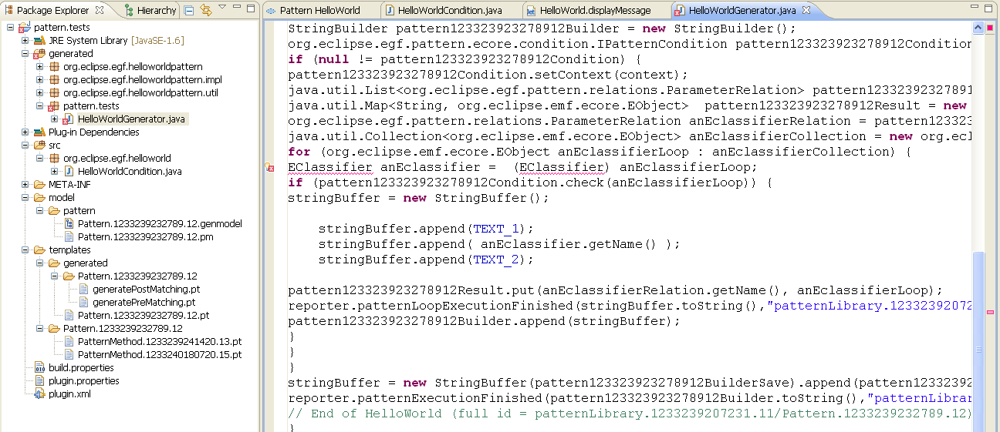
It's not compiling anymore. That's right, our resulting generator class does not know anything about EClassifier as
a Java type. To help it do so, edit the HelloWorld generateHeader method and replace its content with the
following piece of code :
<%@ jet package="pattern.tests" class="HelloWorldGenerator" imports="org.eclipse.emf.ecore.EClassifier" %>
Then produce HelloWorld again. It's compiling now (if not, do not forget to save the generateHeader editor before
producing again).
Running HelloWorld
-
First, choose a model for Pattern Runner that conforms to HelloWorld parameter.
That should be easy, since HelloWorld parameter is defined by the Ecore meta-model. So every Ecore model should
do the trick. Try giving the model path context (of the Run HelloWorld factory component invocation) the org.eclipse.uml2.uml/model/UML.ecore value.
- Run the previously set launch configuration.
- Execute HelloWorld factory.
Understanding the result
The resulting output in the launching console is composed of several such outputs (indeed, one per EClassifier in UML.ecore) :
2008-03-03 17:47:10,379 INFO [Worker-1] - PatternExecutionReporter.patternLoopExecutionFinished(..) _ Start of a loop in patternLibrary.1204215413112.38/Pattern.1204215762681.39
Hello CallBehaviorAction !
End of a loop in patternLibrary.1204215413112.38/Pattern.1204215762681.39
And one big :
2008-03-03 17:47:10,379 INFO [Worker-1] - PatternExecutionReporter.patternExecutionFinished(..) _ Start of patternLibrary.1204215413112.38/Pattern.1204215762681.39
Hello ClearStructuralFeatureAction !
Hello TemplateableElement !
Hello Abstraction !
Hello LiteralNull !
Hello Vertex !
Hello CommunicationPath !
Hello CallConcurrencyKind !
Hello ElementImport !
Hello ActivityPartition !
Hello UseCase !
Hello Reception !
...
Hello PackageImport !
Hello CallBehaviorAction !
End of patternLibrary.1204215413112.38/Pattern.1204215762681.39
As you might have already guessed, the pattern execution reporter is called at different times.
-
The first case stands for a parameter value being accepted and dealt with by the pattern.
Since it is calling its Generate method, something as been generated, maybe it should be taken into account.
That part is referred to as a loop in the console output.
-
The second case stands for the whole pattern being executed.
That means, HelloWorld has been applied to every classifier of the UML2 model, maybe it should be taken into account too.
The pattern inheritance part
Imagine that pattern.tests is a FC provided by another team, as a usable COTS.
We are fine with the behavior, but we would like to change the output message.
This is a good opportunity to test the inheritance mechanism.
The following steps are required :
- Deploy pattern.tests
- Create a new FC with a pattern library
- Create a new pattern ExtendedHelloWorld inheriting from HelloWorld
- Run the new pattern
As Eclipse experts, you'll find that part pretty easy to achieve.
-
Select pattern.tests in the Package Explorer and export it as a deployable plug-in.
Either use a dedicated extension location, or deploy it to the dropins directory in the target platform.
-
If everything goes ok, close the pattern.tests project in the Project Explorer.
This is an important step, for we need the newly deployed one to be taken into account.
-
Finally, launch test workbench. In EGF perspective views, pattern.tests should have migrated from
Factory Component Explorer to Factory Components (meaning it is deployed).
If not, try and launch eclipse.exe with the -clean argument (or select clean configuration in your launch configuration).
Again as EGF experts, that is something easy to do.
- Create a new FC named (and identified as) pattern.tests2
- Add it a pattern library named InheritanceTests
-
Since our pattern will depend on HelloWorld, add this FC a dependency towards pattern.tests.
This is done through the plug-in mechanism of adding a dependency.
The main reason being that produced artifacts of the new pattern will depend on already produced ones of HelloWorld.
Now to the interesting part.
- Create a new pattern named ExtendedHelloWorld underneath InheritanceTests.
-
Go for its Inheritance page.
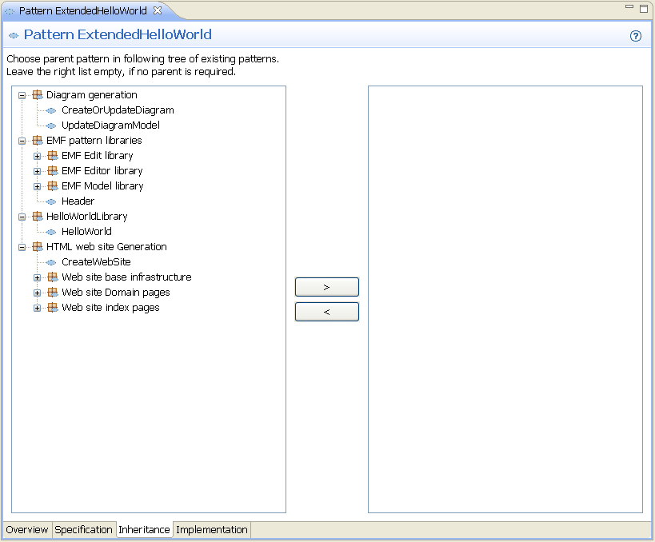
On the left viewer, you can select any deployed pattern found in the platform. This will be the selected parent.
On the right viewer is displayed current parent. If none, nothing is displayed.
Select HelloWorld in the left viewer and click the > button.
You can no longer select a new entry in the left viewer and click the > button.
This is because a pattern can inherit from only one pattern at a time. To change parent, select current one in
the right viewer, then click the < button. Now you can select a new parent.
- Save the pattern editor.
-
Go for the Specification page.
ExtendedHelloWorld is now having a condition class.
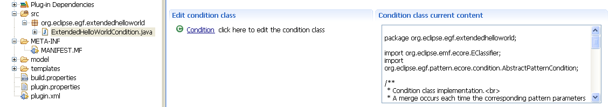
Since ExtendedHelloWorld is inheriting from HelloWorld, it's also inheriting its parameters.
Nevertheless, you'll find that the generated condition class for ExtendedHelloWorld does not inherit from the
one of HelloWorld. In fact, this is the developer responsibility to choose whether the parent condition should be
taken into account or not.
If you want to use parent condition, delegate to a new instance of parent condition.
Inheriting directly from parent condition won't be persisted when a merge operation occurs.
-
It's time to extend the HelloWorld behavior.
Go to the Implementation page.
We would like to override HelloWorld displayMessage method.
There is no specific UI mechanism provided to do so.
Instead, add a new method, and name it displayMessage. At production time, this will be interpreted as an
override of HelloWorld corresponding method.
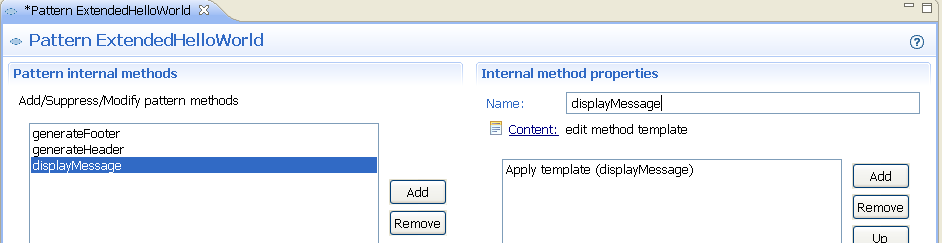
-
Give it the following content (and save it):
Extended Hello <%= anEclassifier.getName() %>;
We do have access to the parent pattern parameters.
-
Go back to the pattern editor.
Let us feed the Generate method.
We said the behavior of HelloWorld was acceptable. That means we want to orchestrate our implementation the same
way.
Click the Add button of the Generate method section. Select Super method call.
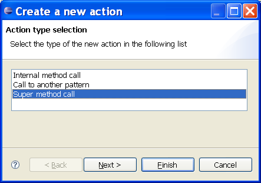
Click Finish.
We have just told our Generate method to call parent one.
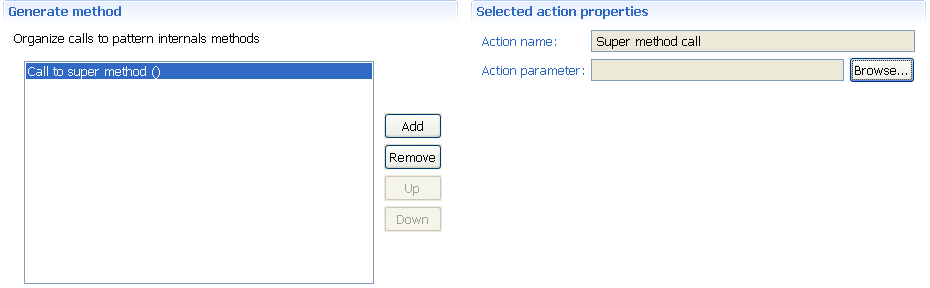
- Save the pattern editor.
-
One last step that we don't want to forget about.
Fill generateHeader template with following code :
<%@ jet package="pattern.test2" class="ExtendedHelloWorldGenerator" imports="org.eclipse.emf.ecore.EClassifier" %>
There is a need to import EClassifier because this is an inherited type.
However, you should have noticed that a correct header is already available.
This one was generated by the framework at save time, which occurred after specifying the parent pattern.
This mechanism works for the first production only, when no header is provided.
If one header is found, then nothing happens, and you need to modify it by yourself.